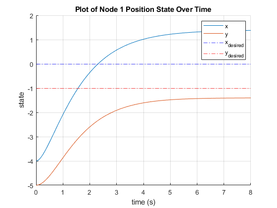
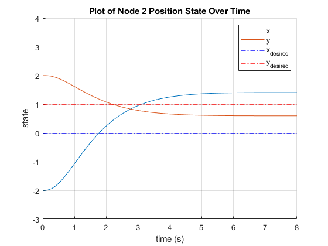
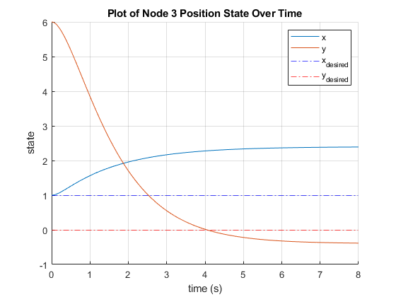
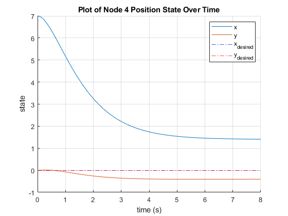
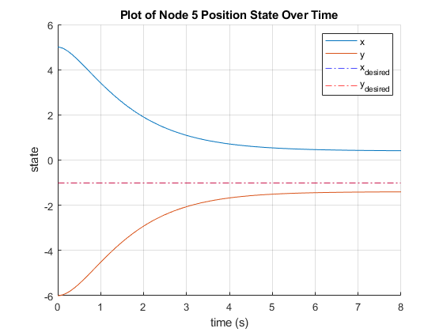
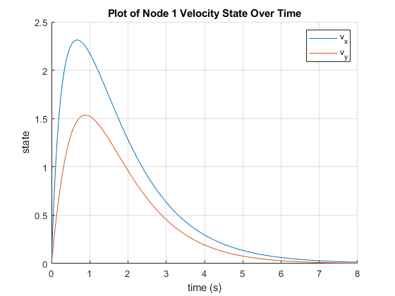
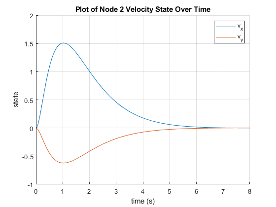
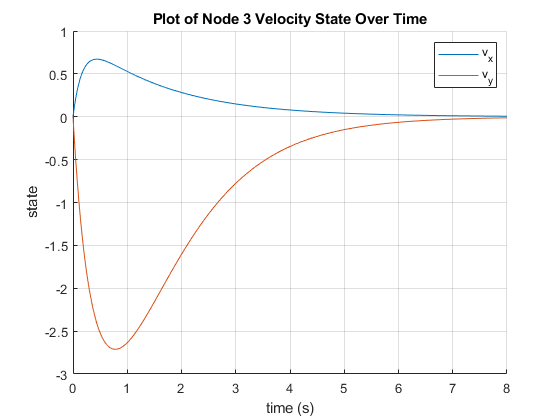
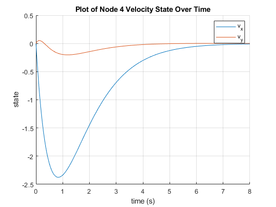
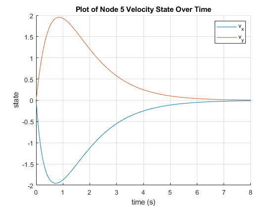

Contents
Romeo Perlstein HW2
Help! I need somebody
close all
clear
Q1
given the following grpah:
G = [2 0 0 0 0;
0 2 0 0 0;
0 0 2 0 0;
0 0 0 2 0;
0 0 0 0 2];
A = [0 1 0 0 1;
1 0 1 0 0;
0 1 0 1 0;
0 0 1 0 1;
1 0 0 1 0];
L = G - A;
% Given
x0_vec = [-4, -5;
-2, 2;
1, 6;
7, 0;
5, -6];
k_vec_relative = [0, -1;
0, 1;
1, 0;
0, 0;
-1, -1];
% k_vec_relative = [1,1;
% 0,0;
% 0,0;
% 0,0;
% 0,0];
% k = x0_vec + k_vec_relative
k = k_vec_relative
v0_vec = zeros(5,2);
z0_vec = [x0_vec; v0_vec];
z0_vec_1d = z0_vec(:);
k_gain = 2.5;
gamma_gain = 0.7;
tall_er_ant = (10^-13); % Tolerance
step_size = 0.025; % step size
max_time = 8; % max time (0->max_time)
t = [0:step_size:max_time]; % timestep
% ODE options
ODE_options = odeset("RelTol", tall_er_ant, "AbsTol", tall_er_ant);
[T,Z] = ode45(@myodefun, t, z0_vec_1d, ODE_options, A, k, k_gain, gamma_gain);
z_state.x1 = [Z(:,1), Z(:,11)];
z_state.x2 = [Z(:,2), Z(:,12)];
z_state.x3 = [Z(:,3), Z(:,13)];
z_state.x4 = [Z(:,4), Z(:,14)];
z_state.x5 = [Z(:,5), Z(:,15)];
z_state.v1 = [Z(:,6), Z(:,16)];
z_state.v2 = [Z(:,7), Z(:,17)];
z_state.v3 = [Z(:,8), Z(:,18)];
z_state.v4 = [Z(:,9), Z(:,19)];
z_state.v5 = [Z(:,10), Z(:,20)];
count = 1;
z_state.psi1 = zeros(length(t),2);
z_state.psi2 = zeros(length(t),2);
z_state.psi3 = zeros(length(t),2);
z_state.psi4 = zeros(length(t),2);
z_state.psi5 = zeros(length(t),2);
for i = 1:length(t)
z_state.psi1(i, :) = z_state.x1(i,:) - k(1,:);
z_state.psi2(i, :) = z_state.x2(i,:) - k(2,:);
z_state.psi3(i, :) = z_state.x3(i,:) - k(3,:);
z_state.psi4(i, :) = z_state.x4(i,:) - k(4,:);
z_state.psi5(i, :) = z_state.x5(i,:) - k(5,:);
end
% z_state.psi1 = [Z(:,11), Z(:,26)];
% z_state.psi2 = [Z(:,12), Z(:,27)];
% z_state.psi3 = [Z(:,13), Z(:,28)];
% z_state.psi4 = [Z(:,14), Z(:,29)];
% z_state.psi5 = [Z(:,15), Z(:,30)];
%
% Position
figure;
hold on
plot(t, z_state.x1)
yline(k(1,1), "b-.")
yline(k(1,2), "r-.")
legend(["x", "y", "x_{desired}", "y_{desired}"])
xlabel("time (s)")
ylabel("state")
title("Plot of Node 1 Position State Over Time")
grid on
figure;
hold on
plot(t, z_state.x2)
yline(k(2,1), "b-.")
yline(k(2,2), "r-.")
legend(["x", "y", "x_{desired}", "y_{desired}"])
xlabel("time (s)")
ylabel("state")
title("Plot of Node 2 Position State Over Time")
grid on
ylim([-3, 4])
figure;
hold on
plot(t, z_state.x3)
yline(k(3,1), "b-.")
yline(k(3,2), "r-.")
legend(["x", "y", "x_{desired}", "y_{desired}"])
xlabel("time (s)")
ylabel("state")
title("Plot of Node 3 Position State Over Time")
grid on
figure;
hold on
plot(t, z_state.x4)
yline(k(4,1), "b-.")
yline(k(4,2), "r-.")
legend(["x", "y", "x_{desired}", "y_{desired}"])
xlabel("time (s)")
ylabel("state")
title("Plot of Node 4 Position State Over Time")
grid on
figure;
hold on
plot(t, z_state.x5)
yline(k(5,1), "b-.")
yline(k(5,2), "r-.")
legend(["x", "y", "x_{desired}", "y_{desired}"])
xlabel("time (s)")
ylabel("state")
title("Plot of Node 5 Position State Over Time")
grid on
% Velocity
figure;
hold on
plot(t, z_state.v1)
legend(["v_x", "v_y"])
xlabel("time (s)")
ylabel("state")
title("Plot of Node 1 Velocity State Over Time")
grid on
figure;
hold on
plot(t, z_state.v2)
legend(["v_x", "v_y"])
xlabel("time (s)")
ylabel("state")
title("Plot of Node 2 Velocity State Over Time")
grid on
figure;
hold on
plot(t, z_state.v3)
legend(["v_x", "v_y"])
xlabel("time (s)")
ylabel("state")
title("Plot of Node 3 Velocity State Over Time")
grid on
figure;
hold on
plot(t, z_state.v4)
legend(["v_x", "v_y"])
xlabel("time (s)")
ylabel("state")
title("Plot of Node 4 Velocity State Over Time")
grid on
figure;
hold on
plot(t, z_state.v5)
legend(["v_x", "v_y"])
xlabel("time (s)")
ylabel("state")
title("Plot of Node 5 Velocity State Over Time")
grid on
% figure;
% title("Plot of \psi Over Time")
% xlabel("X")
% ylabel("Y")
% hold on
% grid on
% yline(0, "-.");
% xline(0, "-.");
% for i = 1:length(T)
% plot(z_state.psi1(1:i,1), z_state.psi1(1:i,2), "blue", LineWidth=1.5)
% plot(z_state.psi2(1:i,1), z_state.psi2(1:i,2), "red", LineWidth=1.5)
% plot(z_state.psi3(1:i,1), z_state.psi3(1:i,2), "green", LineWidth=1.5)
% plot(z_state.psi4(1:i,1), z_state.psi4(1:i,2), "magenta", LineWidth=1.5)
% plot(z_state.psi5(1:i,1), z_state.psi5(1:i,2), "black", LineWidth=1.5)
%
% drawnow
% end
% scatter(z_state.psi1(end,1), z_state.psi1(end,2), "blue")
% scatter(z_state.psi2(end,1), z_state.psi2(end,2), "red")
% scatter(z_state.psi3(end,1), z_state.psi3(end,2), "green")
% scatter(z_state.psi4(end,1), z_state.psi4(end,2), "magenta")
% scatter(z_state.psi5(end,1), z_state.psi5(end,2), "black")
% legend(["x_0", "y_0", "V_1", "V_2", "V_3", "V_4", "V_5"])
%
%
%
% figure;
% hold on;
% grid on;
% title("Plot of X State (Top-down View)")
% xlabel("X")
% ylabel("Y")
% axis equal
% xlim([-5,8])
% ylim([-8,8])
% scatter(x0_vec(1,1), x0_vec(1,2),30,"b","filled")
% scatter(x0_vec(2,1), x0_vec(2,2),30,"r","filled")
% scatter(x0_vec(3,1), x0_vec(3,2),30,"green","filled")
% scatter(x0_vec(4,1), x0_vec(4,2),30,"m","filled")
% scatter(x0_vec(5,1), x0_vec(5,2),30,"black","filled")
% % plot([x0_vec(1,1),x0_vec(2,1)], [x0_vec(1,2),x0_vec(2,2)],"b-.")
% % plot([x0_vec(2,1),x0_vec(3,1)], [x0_vec(2,2),x0_vec(3,2)],"b-.")
% % plot([x0_vec(3,1),x0_vec(4,1)], [x0_vec(3,2),x0_vec(4,2)],"b-.")
% % plot([x0_vec(4,1),x0_vec(5,1)], [x0_vec(4,2),x0_vec(5,2)],"b-.")
% % plot([x0_vec(1,1),x0_vec(5,1)], [x0_vec(1,2),x0_vec(5,2)],"b-.")
%
% scatter(k(1,1), k(1,2),45,"b", "x")
% scatter(k(2,1), k(2,2),45,"red", "x")
% scatter(k(3,1), k(3,2),45,"green", "x")
% scatter(k(4,1), k(4,2),45,"magenta", "x")
% scatter(k(5,1), k(5,2),45,"black","x")
% % plot([k(1,1),k(2,1)], [k(1,2),k(2,2)],"r-.")
% % plot([k(2,1),k(3,1)], [k(2,2),k(3,2)],"r-.")
% % plot([k(3,1),k(4,1)], [k(3,2),k(4,2)],"r-.")
% % plot([k(4,1),k(5,1)], [k(4,2),k(5,2)],"r-.")
% % plot([k(1,1),k(5,1)], [k(1,2),k(5,2)],"r-.")
%
% for i = 1:length(T)
% plot(z_state.x1(1:i,1), z_state.x1(1:i,2), "b");
% plot(z_state.x2(1:i,1), z_state.x2(1:i,2), "red");
% plot(z_state.x3(1:i,1), z_state.x3(1:i,2), "green");
% plot(z_state.x4(1:i,1), z_state.x4(1:i,2), "magenta");
% plot(z_state.x5(1:i,1), z_state.x5(1:i,2), "black");
% % pause(0.1)
% axis equal
% xlim([-5,8])
% ylim([-8,8])
% drawnow
% end
% scatter(z_state.x1(end,1), z_state.x1(end,2),30,"b");
% scatter(z_state.x2(end,1), z_state.x2(end,2),30,"red");
% scatter(z_state.x3(end,1), z_state.x3(end,2),30,"green");
% scatter(z_state.x4(end,1), z_state.x4(end,2),30,"magenta");
% scatter(z_state.x5(end,1), z_state.x5(end,2),30,"black");
% % plot([z_state.x1(end,1), z_state.x2(end,1)], [z_state.x1(end,2),z_state.x2(end,2)],"g-.");
% % plot([z_state.x2(end,1), z_state.x3(end,1)], [z_state.x2(end,2),z_state.x3(end,2)],"g-.");
% % plot([z_state.x3(end,1), z_state.x4(end,1)], [z_state.x3(end,2),z_state.x4(end,2)],"g-.");
% % plot([z_state.x4(end,1), z_state.x5(end,1)], [z_state.x4(end,2),z_state.x5(end,2)],"g-.");
% % plot([z_state.x5(end,1), z_state.x1(end,1)], [z_state.x5(end,2),z_state.x1(end,2)],"g-.");
function z_dot = myodefun(t, z, A, k, k_gain, gamma_gain)
x = [z(1:5), z(11:15)];
v = [z(6:10,:), z(16:20)];
formation_x_dot = zeros(5,2);
x_dot = zeros(5, 2);
v_dot = zeros(5, 2);
v_dot_x = zeros(5, 2);
v_dot_v = zeros(5, 2);
for i = 1:5
% 2 element vectors
xi = x(i,:);
ki = k(i,:);
vi = v(i,:);
neighbors = find(A(i,:));
% Summation portion
for j = neighbors
% 2 element vectors
xj = x(j, :);
vj = v(j, :);
kj = k(j, :);
aij = A(i,j);
% First, do formation control
formation_x_dot(i,:) = formation_x_dot(i,:) - ((xi-xj)-(ki-kj)); % negative because summation is negative
% Find v_dot
v_dot_x(i,:) = v_dot_x(i,:) + aij*(xj-xi);
v_dot_v(i,:) = v_dot_v(i,:) + aij*(vj-vi);
% pause(1)
end
% Correct all of our sums here
% x_dot(i,:) = formation_x_dot(i,:);
% x_dot(i,:) = formation_x_dot(i,:) + (k_gain*gamma_gain)*v(i,:);
x_dot(i,:) = v(i,:);
v_dot(i,:) = formation_x_dot(i,:) + (k_gain*gamma_gain)*v_dot_v(i,:);
% v_dot(i,:) = k_gain*v_dot_x(i,:) + (k_gain*gamma_gain)*v_dot_v(i,:);
end
z_dot(1:5) = x_dot(:,1);
z_dot(6:10) = v_dot(:,1);
% z_dot(11:15) = psi_dot(:,1);
z_dot(11:15) = x_dot(:,2);
z_dot(16:20) = v_dot(:,2);
% z_dot(26:30) = psi_dot(:,2);
z_dot = transpose(z_dot);
end
k =
0 -1
0 1
1 0
0 0
-1 -1
         